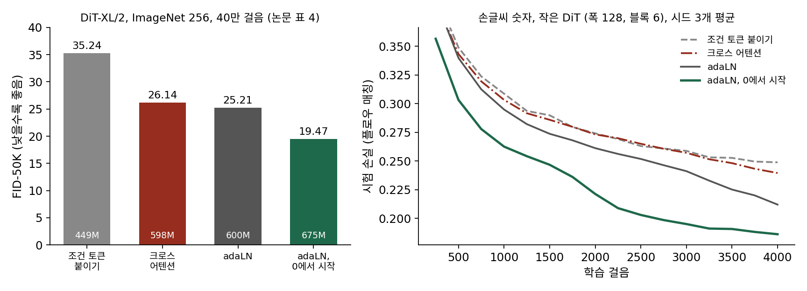

12장 — 디퓨전 트랜스포머: U-Net 자리에 트랜스포머를
adaLN-Zero: 시간은 정규화의 배율과 치우침으로
U-Net 은 시간 벡터를 합성곱 블록마다 채널 수로 바꿔 모든 칸에 더했다. 정규화한 특징에 시간 벡터로 정한 배율을 곱하고 치우침을 더하는 꼴도 있었다. 트랜스포머 블록에도 시간과 조건을 넣을 자리가 여럿이다. 토큰 줄 맨 앞에 조건 토큰을 하나 붙여도 되고, 크로스 어텐션으로 읽게 해도 되고, 층 정규화의 배율을 시간으로 정해도 된다. 셋 다 그럴듯해 보인다. 어느 것을 골라야 할까, 그리고 고른 것이 결과를 얼마나 바꿀까?
역사: 네 블록을 같은 크기로 견주다
피블스와 셰는 DiT 를 설계하며 조건을 넣는 블록 네 가지를 가장 큰 설정(XL, 패치 2)에 넣고 ImageNet 256 × 256에서 40만 걸음씩 학습해 견주었다. 조건은 시간과 분류 라벨이었다. 첫째는 조건 벡터를 토큰으로 줄에 붙이는 블록, 둘째는 크로스 어텐션을 더한 블록, 셋째는 층 정규화의 배율과 치우침을 조건에서 만드는 블록(adaLN)이다. 넷째는 셋째와 같되, 처음에 블록 전체가 아무 일도 하지 않게 만든 블록이다. 넷째는 지도 학습 쪽의 경험에서 왔다. 고얄(Priya Goyal)과 동료들이 2017년에 잔차 블록 끝의 배치 정규화 배율을 0으로 시작하면 큰 학습이 빨라진다고 보고했고, U-Net 디퓨전 모델들도 블록의 마지막 합성곱을 0으로 시작했다.
| 블록 | 매개변수 | Gflops | FID (40만 걸음, 낮을수록 좋음) |
|---|---|---|---|
| 조건 토큰을 줄에 붙이기 | 4억 4,900만 | 119.37 | 35.24 |
| 크로스 어텐션 | 5억 9,800만 | 137.62 | 26.14 |
| adaLN | 6억 | 118.56 | 25.21 |
| adaLN, 0에서 시작 | 6억 7,500만 | 118.64 | 19.47 |
(DiT 논문 표 4. FID 는 만든 그림 5만 장과 실제 그림의 특징 분포가 얼마나 다른지 잰 값이다.) 크로스 어텐션은 계산이 15%쯤 더 들면서도 0에서 시작한 adaLN 보다 나빴다. 논문은 「0에서 시작한 블록의 FID 는 토큰을 붙인 블록의 거의 절반」이라고 적고, 이후 모든 실험에 이 블록을 썼다.
정규화 뒤의 배율, 치우침, 문
블록 안에서 토큰 벡터 h는 층 정규화(토큰 하나의 수들을 평균 0, 분산 1로 맞추는 것)를 지난 뒤 어텐션이나 MLP 로 들어가고, 그 출력이 원래 h에 더해진다(잔차 연결). 0에서 시작하는 adaLN 블록은 시간과 라벨을 합친 조건 벡터 c 하나에서 수 묶음 여섯 개를 만들어 이 길의 세 군데를 조절한다.
γ(감마), β(베타), α(알파)는 DiT 논문의 글자를 따랐다. 잡음 일정의 αt, βt 와는 상관없는 것이고, 이 절에서만 이 뜻으로 쓴다.
처음에 Wmod와 bmod가 0이면 문 α가 0이라, 어텐션과 MLP 가 무엇을 내든 h에 0이 더해진다. 블록 전체가 입력을 그대로 내보내는 항등 함수다. 블록 수십 개를 쌓아도 처음의 신경망은 입력 토큰을 그대로 마지막 층까지 나르는 길 하나이고, 학습은 그 길에서 블록 하나하나가 「얼마나 끼어들지」를 조금씩 키워 가며 시작한다. 같은 수 c가 모든 토큰의 배율과 치우침을 정하므로, 시간이 바뀌면 블록 전체의 일하는 방식이 한꺼번에 바뀐다. 시간 벡터를 채널마다 더해 같은 합성곱 가중치가 잡음 수준마다 다른 커널처럼 일하게 한 U-Net 의 생각을 트랜스포머의 정규화 자리로 옮긴 것이다.
조건으로 정규화의 배율·치우침을 정하는 것을 적응 층 정규화(adaLN)라 하고, 거기에 문을 더해 블록이 항등 함수에서 시작하게 한 것을 adaLN-Zero (0에서 시작하는 적응 층 정규화 / adaptive layer norm-Zero)라 한다. 「ada」는 adaptive 의 머리글자로, 정규화의 배율이 고정된 수가 아니라 조건에 따라 바뀐다는 뜻이다.
손글씨 숫자로 다시 견주기
같은 경향이 아주 작은 모델에서도 보일까? 손글씨 숫자 MNIST(28 × 28)를 4 × 4 패치 49개로 자르고, 폭 128·블록 6개짜리 DiT 를 네 가지 블록으로 지어 숫자 라벨을 조건으로 플로우 매칭을 학습했다. 같은 학습 걸음 4,000번, 시드 세 개, 시험 그림 2,000장에 고정한 시간과 잡음으로 손실을 쟀다.
| 블록 | 매개변수 | 시험 손실, 1,000걸음 | 시험 손실, 4,000걸음 (시드 셋 평균 ± 표준편차) |
|---|---|---|---|
| 조건 토큰을 줄에 붙이기 | 1,244,816 | 0.3086 | 0.2488 ± 0.0026 |
| 크로스 어텐션 | 1,642,640 | 0.3032 | 0.2395 ± 0.0014 |
| adaLN | 1,868,944 | 0.2948 | 0.2120 ± 0.0014 |
| adaLN, 0에서 시작 | 1,868,944 | 0.2625 | 0.1862 ± 0.0012 |
네 블록의 순서가 논문과 같다. 시드 사이의 흩어짐(표준편차 0.003 아래)보다 블록 사이의 차이가 훨씬 크다. 0에서 시작한 블록은 2,000걸음에서 이미 0.2213으로, 보통의 adaLN 블록이 4,000걸음에 닿은 0.2120 가까이 갔다. 이 실험의 보통 adaLN 블록은 문 자리의 수까지 만들되 문을 1로 묶어 두어서, 0에서 시작한 블록과 매개변수가 한 개도 다르지 않다. 두 줄의 차이는 「처음에 블록이 항등 함수인가」 하나에서 온 것이다. 다만 이것은 손글씨 숫자의 손실이지 그림 품질(FID)이 아니고, 모델도 논문의 XL/2 보다 360배쯤 작다.

ML에서: 변조 층이 매개변수의 3분의 1을 먹는다
이 장에서 견줄 모델은 모두 블록마다 정규화 뒤의 배율과 출력의 문을 시간에서 만든다(Z-Image 만 치우침을 빼고 배율과 문만 만든다. ComfyUI 코드 이름은 Modulation, adaLN_modulation, mod). 문제는 무게다. 폭 d짜리 조건 벡터를 6d개의 수로 바꾸는 선형 층은 블록마다 6d²개의 매개변수를 가진다. 어텐션이 4d², MLP 가 8d²이니 블록 무게의 3분의 1이다. DiT-XL/2 에서도 0에서 시작한 adaLN 블록(6억 7,500만)과 토큰을 붙인 블록(4억 4,900만)의 차이가 2억 2,600만 개, 전체의 33.5%다.
2023년 PixArt-α(픽사트 알파) 를 만든 첸(Junsong Chen)과 동료들은 글을 읽는 크로스 어텐션까지 넣은 자기들의 DiT 에서 이 층이 매개변수의 27%라는 것을 짚고, 시간에서 수 묶음 여섯 개를 한 번만 만들어 모든 블록이 나눠 쓰고 블록마다 학습되는 벡터 하나만 더하는 adaLN-single 을 냈다. 매개변수가 8억 3,300만에서 6억 1,100만으로 26% 줄었다. 이 뒤의 모델들은 변조 층을 줄이는 쪽으로 갔다. ComfyUI 코드로 센 몫은 이렇다(sources/ch12/model_facts.py).
| 모델 | 변조 층의 짜임 | 전체 매개변수 가운데 변조 층 |
|---|---|---|
| FLUX.1 [dev] | 블록마다 따로(두 줄 블록은 줄마다) | 27.3% |
| Qwen-Image | 블록마다, 줄마다 따로 | 33.3% |
| Anima | 블록마다, 폭 256짜리 좁은 길을 거쳐 만듦 | 8.5% |
| FLUX.2 [dev] | 모든 블록이 한 벌을 나눠 씀 | 2.0% |
| Z-Image | 블록마다, 폭 256짜리 시간 벡터에서 만듦 | 2.1% |
| Krea 2 | 한 벌을 나눠 쓰고 블록마다 벡터 하나를 더함(adaLN-single 꼴) | 1.8% |
문제 7. 새 이펙터의 볼륨
공연 음향 기사가 원음 채널(세기 1.0)에 새 이펙터를 끼운다. 내보내는 소리는 「원음 + 문 × 이펙터 출력」이다. 아직 맞추지 않은 이펙터는 원음의 −0.8배를 낸다. (가) 문을 0, 0.25, 0.5, 1로 두면 내보내는 소리는 원음의 몇 배인가? (나) 처음에 문을 1로 두고 공연을 시작하면 무슨 일이 생기는가? (다) 이펙터를 아예 빼 두는 것과 문을 0으로 두는 것은 무엇이 다른가?

1 + 문 × (−0.8)이니까 1.00, 0.80, 0.60, 0.20배요. (나)는 소리가 0.2배로 쪼그라들어요.

이펙터를 쓰려고 끼웠는데 처음부터 다 열면 공연 전체가 망가지는 거네.

(다)는요? 문이 0이면 소리는 똑같잖아요.

소리가 같으면 빼 둔 거랑 같은 거 아니에요?

빼 두면 이펙터를 맞출 기회가 없어. 문이 0이어도 이펙터는 꽂혀 있으니까, 기사가 헤드폰으로 이펙터 출력을 들으면서 맞춰 갈 수 있고, 맞춰지면 문을 조금씩 열면 돼.

그래요. 0에서 시작하는 블록도 처음에는 출력이 입력과 같지만, 어텐션과 MLP 는 꽂혀 있어요. 무엇을 바꾸면 손실이 줄지 알려 주는 기울기가 거기까지 닿느냐는 다음 문제에서 따져 보죠.

조별 과제에 새로 들어온 조원한테 첫 주는 발표를 안 맡기고 자료 조사만 시키는 거네요. 쓸 만해지면 발표 몫을 늘리고요.
문제 8. 0에서 시작해도 배우는가
블록 하나를 수 하나짜리로 줄여 보자. 출력 = h + α · f(h), 문 α = w · c, f 는 가중치 u 를 가진 어텐션이나 MLP 다. 처음에 w = 0이다. 손실을 출력으로 미분한 값이 1, c = 3, f(h) = 0.5일 때 (가) 손실을 w 로 미분한 값은? (나) 손실을 u 로 미분한 값은? (다) w 를 0으로 시작하고 f 의 마지막 층 가중치까지 0으로 시작하면 어떻게 되는가?
문이 0이면 블록이 아무 일도 안 하니까 기울기도 다 0 아니에요? 그럼 영원히 안 배우잖아요.
연쇄 법칙으로 w 까지 가는 길에 무엇이 곱해지죠?

출력을 α로 미분하면 f(h) = 0.5, α를 w 로 미분하면 c = 3. 그래서 1 × 0.5 × 3 = 1.5요. 0이 아니에요.
(나)는 출력을 u 로 미분하면 α × ∂f/∂u 라서, α = 0인 지금은 0이야. 처음 한 걸음에서는 문만 움직이고, 문이 조금 열린 뒤에야 f 안의 가중치가 배우기 시작해.
그럼 (다)는요?

f 의 마지막 층까지 0이면 f(h) = 0이니까 w 의 기울기도 0, u 의 기울기도 α = 0 때문에 0. 그 마지막 층 가중치의 기울기는 α × (그 층의 입력)이라 역시 0이야. 아무것도 안 움직여.
그래요. 0으로 묶는 곳은 문 하나면 돼요. 문을 0으로 두되 그 문이 곱하는 f 는 보통처럼 무작위로 두어야, 문이 「f 를 얼마나 내보낼지」를 배울 거리가 생겨요. DiT 코드도 변조 층과 마지막 출력 층만 0으로 시작해요.

새 조원한테 발표는 안 시켜도, 자료 조사는 진짜로 하게 해야 나중에 발표를 맡길지 말지 판단할 수 있는 거네요.
문제 9. FLUX.1 의 변조 층 무게
FLUX.1 [dev] 은 폭 3072, 두 줄 블록 19개와 한 줄 블록 38개다. 두 줄 블록은 그림 줄과 글 줄이 저마다 3072 → 6 × 3072 변조 층(치우침 포함)을 갖고, 한 줄 블록은 3072 → 3 × 3072 변조 층 하나를 갖는다. (가) 블록들의 변조 층 매개변수는 모두 몇 개이고, 전체 119억 140만 8,320개의 몇 %인가? 위 표의 27.3%와 조금 다른 까닭은? (나) FLUX.2 [dev] 은 폭 6144에서 두 줄 블록용 6 × 6144 변조 층 두 개와 한 줄 블록용 3 × 6144 변조 층 하나(치우침 없음)를 모든 블록이 나눠 쓴다. 변조 층은 몇 개인가? (다) 그림 한 장을 만드는 데 드는 계산은 변조 층 때문에 얼마나 늘어나는가?
(가) 두 줄 블록 하나가 2 × (3072 × 18432 + 18432) = 113,283,072개, 한 줄 블록 하나가 3072 × 9216 + 9216 = 28,320,768개요. 19개와 38개를 곱해 더하면 3,228,567,552개, 27.1%요. 표보다 0.2%포인트 모자란 건, 블록 밖에 하나 더 있는 마지막 층의 변조(3072 → 2 × 3072, 18,880,512개)를 안 세서예요. 더하면 3,247,448,064개, 27.3%로 맞아요.
32억 개면 FLUX.2 [klein] 4B 모델 전체(38억 7,554만)에 가깝네.
(나)는 2 × 6144 × 36864 + 6144 × 18432 = 566,231,040개요. 폭이 두 배인데도 다섯 분의 1이 안 되네요.
(다)는요? 매개변수가 27%면 계산도 27% 아닐까요?
그렇지 않을까요? 곱셈이 매개변수만큼 있으니까요.
변조 층이 받는 건 토큰이 아니라 조건 벡터 하나야. 그림 한 장에 한 번만 곱해. 어텐션이나 MLP 행렬은 토큰 4,096개에 한 번씩 곱하니까, 변조 층 계산은 몸통 계산의 수천 분의 1이야.
그래요. 변조 층은 메모리와 학습할 거리를 먹지, 계산은 거의 먹지 않아요. 그래서 FLUX.2 는 계산은 그대로 두고 그 무게만 덜어 냈어요.
회사 공지 한 장을 부서마다 따로 써서 붙이다가, 본사에서 한 장 써서 돌려 보는 걸로 바꾼 거네요. 읽는 시간은 그대로인데 쓰는 사람 품만 줄어요.